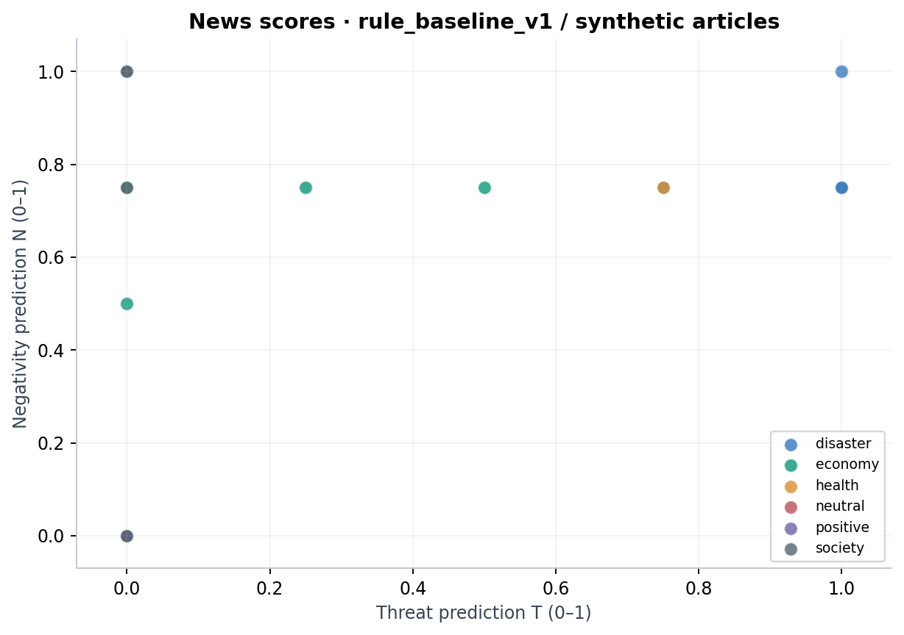
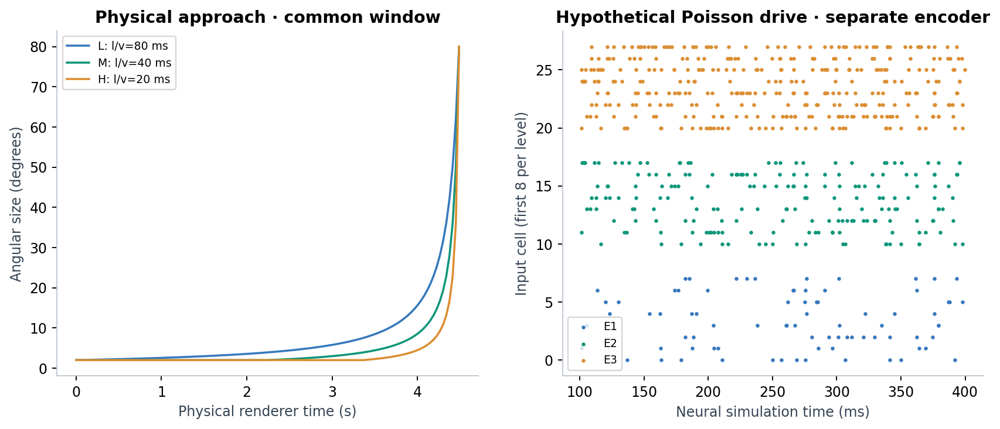
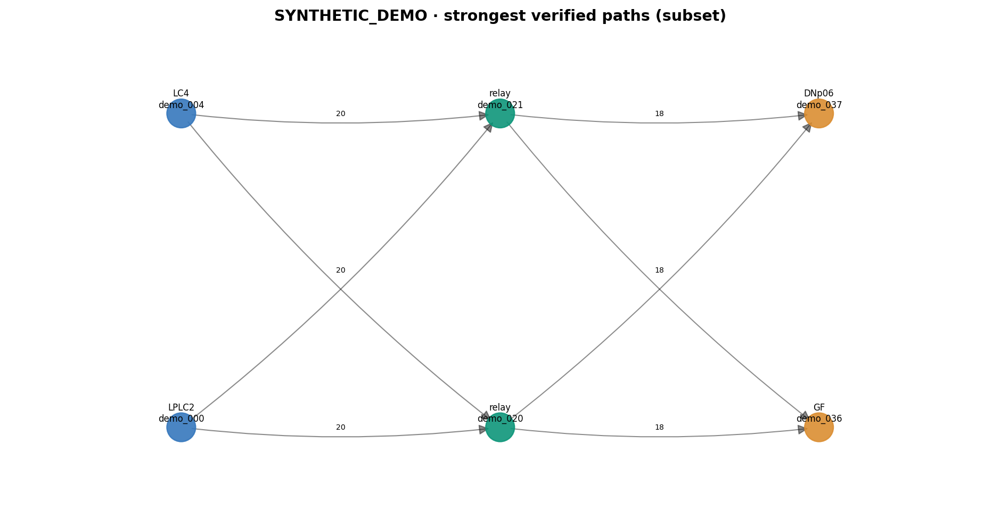
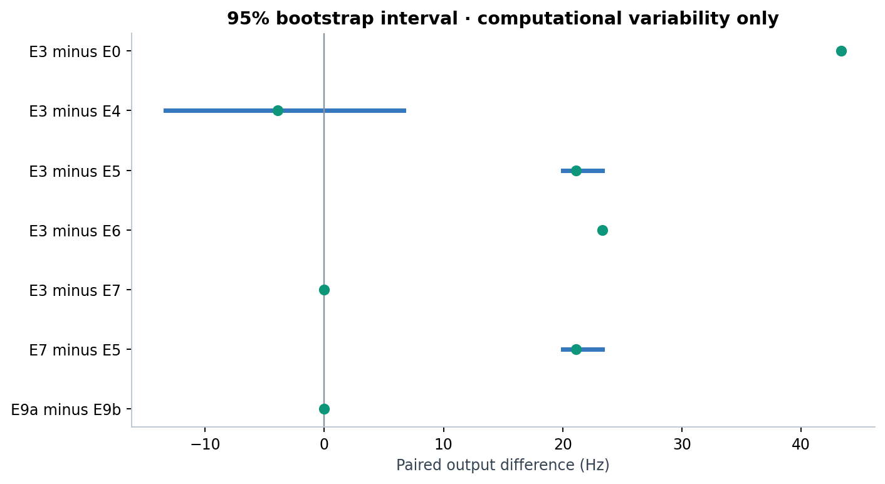

COMPUTATIONAL RESEARCH · REPRODUCIBLE RUN
뉴스의 위협성에서
초파리 회로 모델의 반응까지
부정성(N)과 위협성(T)을 분리하고, 가상 입력·연결 구조·대조 조건에 따른 모델 출력을 비교합니다.
연구 단계: 계산 파일럿
직접 작성한 가상 기사 · 규칙 baseline 예측 · 가상 연결 데이터 · 모형 활동. 사람·초파리의 실제 스트레스 반응을 측정한 결과가 아닙니다.
40뉴런
110방향성 연결
8입력 세포
2출력 세포
3계산 시드
24가상 기사
이번 실행에서 관찰한 값
E3의 출력 평균 변화는 43.33 Hz, LPLC2 연결을 제거한 E5는 22.22 Hz였습니다. 이 값은 선택한 부분 회로와 가상 입력 설정에 한정됩니다.
버전: SYNTHETIC_DEMO · 엔진: reduced_lif_analytic_v1
뉴스의 부정성과 위협성
직접 작성한 가상 기사와 규칙 baseline 예측. 동일 좌표의 기사는 겹쳐 보일 수 있습니다.

자극과 입력의 분리
물리 영상은 초기·최종 각도와 전체 제시 시간을 맞춥니다. 신경 입력의 시간축·발화율은 별도 가정입니다.

확인한 연결 경로
강한 경로 일부만 표시합니다. 전체 뉴런 ID와 경로는 별도 파일로 제공합니다.

대조 조건별 차이
같은 시드의 차이를 비교합니다. 95% 구간은 계산 반복의 부트스트랩입니다.

조건별 요약
| condition_id |
seeds |
delta_mean_hz |
delta_sd_hz |
latency_mean_ms |
recruitment_mean |
auc_mean |
| E0 |
3 |
0.0000 |
0.0000 |
미정의 |
0.0000 |
0.0000 |
| E1 |
3 |
2.2222 |
1.9245 |
215.0000 |
0.2500 |
0.6667 |
| E2 |
3 |
25.5556 |
1.9245 |
40.0000 |
0.3125 |
7.6667 |
| E3 |
3 |
43.3333 |
0.0000 |
20.0000 |
0.3125 |
13.0000 |
| E4 |
3 |
47.2222 |
10.0462 |
13.3333 |
0.3125 |
14.1667 |
| E5 |
3 |
22.2222 |
1.9245 |
33.3333 |
0.3125 |
6.6667 |
| E6 |
3 |
20.0000 |
0.0000 |
43.3333 |
0.3125 |
6.0000 |
| E7 |
3 |
43.3333 |
0.0000 |
20.0000 |
0.3125 |
13.0000 |
| E8 |
3 |
43.3333 |
0.0000 |
20.0000 |
0.3125 |
13.0000 |
| E9a |
3 |
25.5556 |
1.9245 |
40.0000 |
0.3125 |
7.6667 |
| E9b |
3 |
25.5556 |
1.9245 |
40.0000 |
0.3125 |
7.6667 |
시드별 대응 비교
| contrast |
mean_delta_hz |
paired_seed_sd_hz |
computational_ci95_low |
computational_ci95_high |
unit |
| E3 minus E0 |
43.3333 |
0.0000 |
43.3333 |
43.3333 |
paired computational seed; not biological subjects |
| E3 minus E4 |
-3.8889 |
10.0462 |
-13.3333 |
6.6667 |
paired computational seed; not biological subjects |
| E3 minus E5 |
21.1111 |
1.9245 |
20.0000 |
23.3333 |
paired computational seed; not biological subjects |
| E3 minus E6 |
23.3333 |
0.0000 |
23.3333 |
23.3333 |
paired computational seed; not biological subjects |
| E3 minus E7 |
0.0000 |
0.0000 |
0.0000 |
0.0000 |
paired computational seed; not biological subjects |
| E7 minus E5 |
21.1111 |
1.9245 |
20.0000 |
23.3333 |
paired computational seed; not biological subjects |
| E9a minus E9b |
0.0000 |
0.0000 |
0.0000 |
0.0000 |
paired computational seed; not biological subjects |
해석 범위와 남은 검증
- 뉴스는 직접 작성한 가상 기사이며, 점수는 규칙 baseline 예측입니다. 사람 평가와의 일치도는 별도 검증이 필요합니다.
- 연결과 뉴런 ID 모두 소프트웨어 검증용 가상 데이터입니다.
- 시각 looming과 신경 Poisson 입력은 별개입니다. 생리 반응으로 보정된 tuning curve는 아직 없습니다.
- E4는 외부 입력 이벤트 수를 정확히 맞추지만 감각 세포 정체성까지 맞춘 대조군은 아닙니다.
- E7은 동일 수 뉴런의 연결 정도를 근사 매칭합니다. 잔여 차이는 metrics.csv에 기록합니다.
- 시드 반복은 계산 변동성입니다. 생물학적 개체 수, 인간 스트레스, 호르몬 반응의 증거가 아닙니다.
- L/M/H의 출력 증가는 입력 함수에서 비롯될 수 있습니다. E9a/E9b 일치는 T 단독 변환의 설계 점검입니다.
- 공개 뇌 활동 실측 및 인간 생리 자료와의 독립 검증은 아직 수행하지 않았습니다.